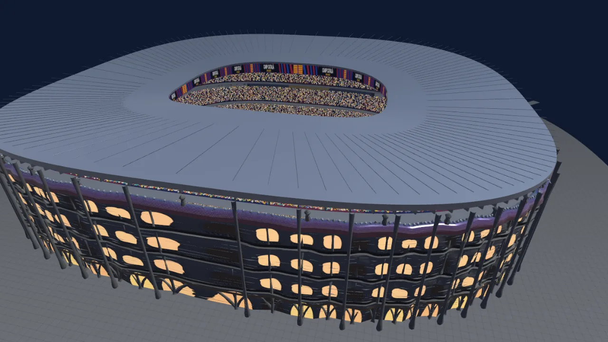

Quince canchas
El local pone el estadio
Cada equipo tiene la suya, así que elegir equipo es también elegir
dónde se juega, y el estadio se viste con los colores del local, butacas
incluidas. Si querés otra, la fila CANCHA del selector te deja cambiarla. En
la Copa manda el local, menos en la final, que se juega en la más grande.
-

Acá se juega la final
CAMP CATALÀ
tres gradas blaugrana, el lema en las butacas y la fachada de Gaudí
120.458 hinchas
De local TIKI-TAKA · LA FURIA
-
THE ROYAL ARCH
tres bandejas bajo el arco, la torre del reloj y el palco real
114.000 hinchas
De local TRÍO DE LEONES · LOS ARTILLEROS · LOS ARISTÓCRATAS
-
ESTÁDIO MARACUYÁ
el óvalo carioca, su techo de membrana y la batucada
84.854 hinchas
De local EL SCRATCH · EL MENGÃO
-
COLISEO GALÁCTICO
cuatro bandejas, piel de LED y techo retráctil
78.126 hinchas
De local LOS GALÁCTICOS · NARANJA MECÁNICA · DEPORTIVO CIUDAD
-
LA FOSSA DEL BISCIONE
tres anillos, once rampas de serpiente y el biscione en las butacas
77.040 hinchas
De local LOS ROMPEHUESOS · LA CULEBRA
-
STADIO DELLE CURVE
tres anillos, foso y torres helicoidales
74.650 hinchas
De local IL DIAVOLO ROSSONERO · LA VIEJA SEÑORA
-
EL MONUMENTO
la cancha hundida y el anillo sin techo
68.966 hinchas
De local SCALONETA 22 · SCALONETA 26 · ALBICELESTE OLD SCHOOL · CA MILLONETAS · LA GARRA CHARRÚA
-
LA LÁMPARA BÁVARA
la piel de almohadillas que se enciende del color del local
67.364 hinchas
De local DIE MANNSCHAFT · LOS BÁVAROS
-
OLD ROAD
ladrillo inglés, el Kop y su pub
57.594 hinchas
De local LOS CAPITANES · LOS PULMONES · LOS VIKINGOS · EL TEATRO DE LOS DIABLOS · THE RED BEATLES
-
LE PARC DE FER
el bowl bajo la envolvente de hierro, con la torre al norte
53.108 hinchas
De local LES PARISIENS · LES BLEUS
-
L'ARENA ETERNA
el anfiteatro romano, la ruina abierta y el palco del emperador
51.896 hinchas
De local SPORTIVO AZZURRI · LA LOBA
-
BODEGÓN XENEIZE
la herradura, el barrio y los palcos
46.156 hinchas
De local ATLÉTICO XENEIZE · ÚLTIMO TANGO
-
EL CARGUERO
la bodega de un buque en alta mar, la popular de contenedores y la jaula
32.074 hinchas
De local JOGO BONITO · ATLÉTICO POTRERO · LOS INDOMABLES
-
EL COLISEO
dos bandejas, techo y esquinas cerradas
25.872 hinchas
De local FULBITO FC · LOS COLCHONEROS
-
Acá se juega el potrero
EL MUNICIPAL
la cancha de barrio, grada baja
7.384 hinchas
De local PIERNA CAMBIADA · LA PÓLVORA · LOS MAGOS · LA CANTERA